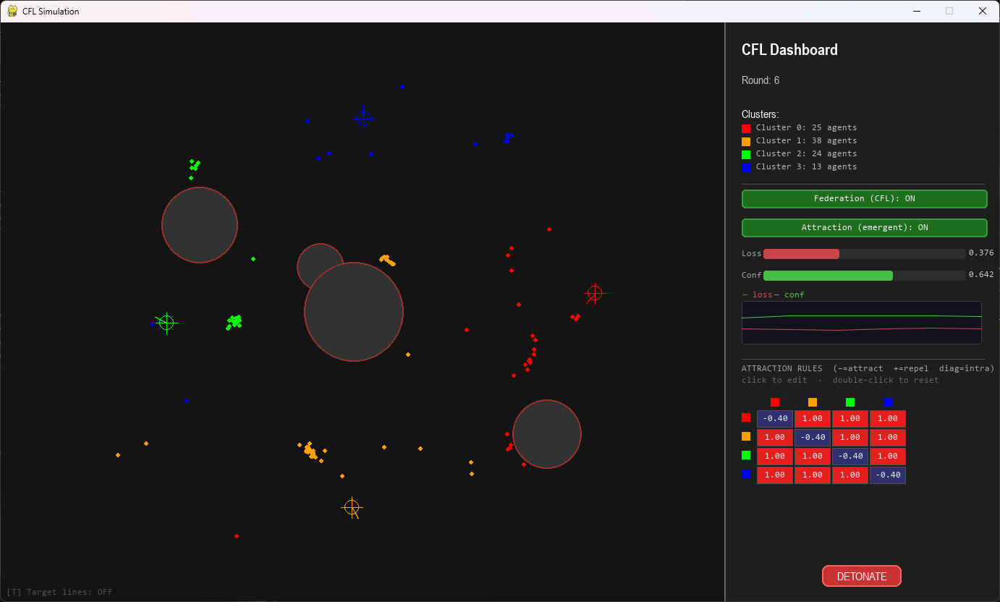
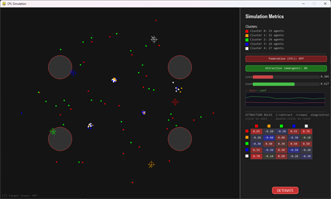
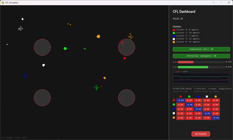
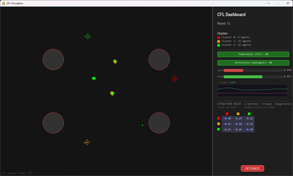
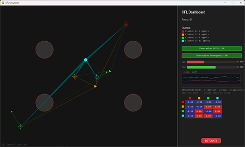
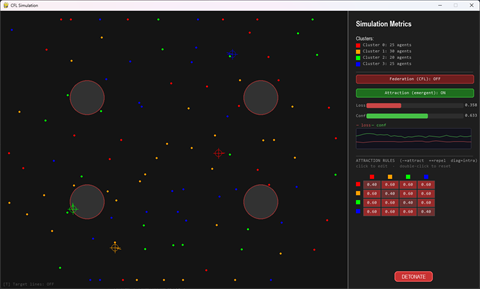
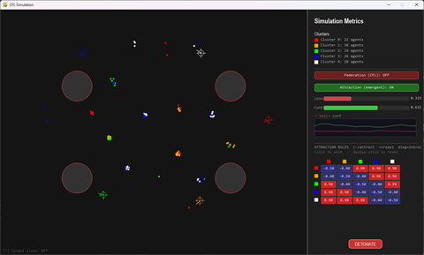
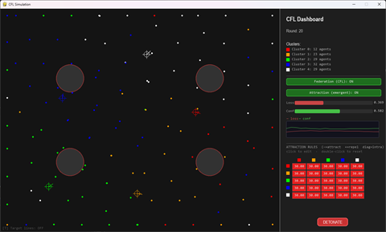
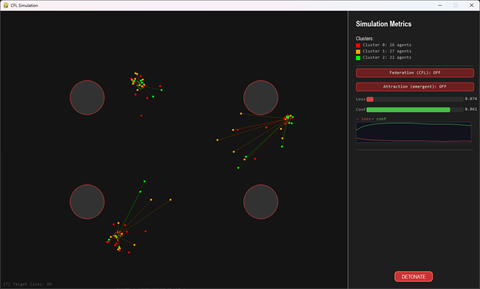
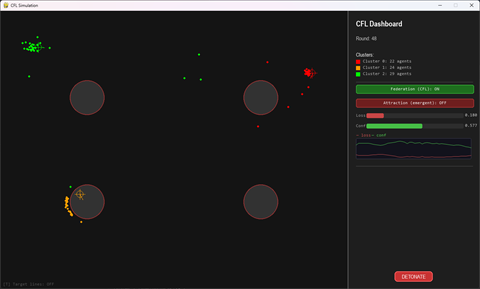

|
Emergent Garden — Clustered Federated Learning
Bidirectional coupling of clustered federated learning (IFCA) and emergent multi-agent physics
|
Diplomski rad / Master's thesis project. Simulacija dvosmjerne povezanosti između kognitivne domene (federalno učenje modela u grozdovima) i fizikalne domene (prostorna dinamika agenata), iz koje izviru kolektivni obrasci koji nisu unaprijed programirani.
A simulation of the bidirectional coupling between a cognitive domain (clustered federated learning of agent models) and a physical domain (spatial agent dynamics), from which collective patterns emerge without being explicitly programmed.

**(HR)** Razumijevanje izvirućeg ponašanja u višeagentskim sustavima predstavlja značajan izazov u području raspodijeljenih inteligentnih sustava. Ovaj projekt modelira dvosmjernu povezanost između dvije razine sustava:
Iz interakcije te dvije razine — naučeni model utječe na gibanje, a prostorno pozicioniranje povratno utječe na model i pripadnost grozdu — nastaju složeni kolektivni obrasci koji nisu unaprijed programirani, već proizlaze iz jednostavnih pravila na razini pojedinačnog agenta.
**(EN)** This project is a runnable, visual realization of the thesis: a swarm of particles ("agents") where each agent runs local model training and the swarm performs Clustered Federated Learning (CFL) using an IFCA-style algorithm (Ghosh et al., 2020). Clusters form, split, and merge spontaneously based on what the agents learn. The learned model feeds back into each agent's physical motion, and the physical motion feeds back into the learning — a closed bidirectional loop whose emergent collective patterns are the object of study.
The simulation is instrumented end-to-end: every federation round is logged to CSV and rendered into comparison plots, and a built-in 2×2 ablation (CFL on/off × emergent physics on/off) isolates the contribution of each coupling direction.
**(HR)** Federalno učenje je pristup raspodijeljenom strojnom učenju u kojem sudionici (klijenti) treniraju lokalne modele na vlastitim podacima, a zajednički model nastaje agregacijom (npr. prosjekom) lokalnih modela, bez razmjene sirovih podataka. Ključni izazov su non-IID podaci: svaki klijent vidi sustavno drugačiju distribuciju.
**(EN)** In this simulation each particle is a federated client. Its "data" is the geometry it experiences — direction to its personal target, obstacle pressure, neighborhood. Crucially, each particle is born with a non-IID directional bias (the _local_bias vector in particle.py): it systematically misperceives the ideal heading. A single agent learning alone can never average this bias away; federation across a cluster cancels it, which is why CFL should improve the loss metric.
**(HR)** Kada klijenti pripadaju različitim "skupinama" s različitim optimalnim modelima, jedan globalni model nije dovoljan. **(Klasterirano) federalno učenje u grozdovima** rješava to tako da klijente grupira i agregira model po grozdu. Ovdje se koristi IFCA (Iterative Federated Clustering Algorithm): svaki klijent sam bira grozd čiji mu emitirani model daje najmanji gubitak.
**(EN)** IFCA replaces a fixed assignment with an argmin-loss assignment: every round, each cluster broadcasts an aggregated model θ_k; each particle evaluates every θ_k against its own situation and joins the cluster with the lowest loss (run_cfl_round). The number of clusters is not fixed — clusters split when their members disagree and merge when they become redundant (MIN_CLUSTERS = 2, MAX_CLUSTERS = 6).
**(HR)** Izviruće (emergentno) ponašanje označava složene kolektivne obrasce koji nisu eksplicitno programirani, nego nastaju iz jednostavnih lokalnih pravila i interakcija među agentima. U ovom sustavu pravila ne nalažu "formiraj jato" — ti obrasci izviru iz kombinacije privlačenja/odbijanja, izbjegavanja prepreka i federalne dinamike učenja.
**(EN)** The emergent layer descends from the original Emergent Garden particle sandbox (see Credits). Simple per-pair attraction/repulsion rules (apply_physics_rules in game.py, built on the pure physics.py force library) produce flocking, splitting, and reorganization that no single rule encodes.
The system is split into two domains that share the same population of agents.
Each agent carries an 8-dimensional model vector (Particle.model, defined in particle.py). The first two dimensions are the persistent learned identity used for clustering (IDENTITY_SLICE = slice(0, 2)); the rest are situational signals fed from the physical domain:
| Idx | Name | Meaning | Set by |
|---|---|---|---|
| 0,1 | dir_x, dir_y | Learned heading (unit vector) — the agent's identity | local_train |
| 2 | confidence | How consistently it converges (0–1, slow EMA) | local_train |
| 3 | obstacle_pressure | Decaying memory of recent obstacle proximity | local_train |
| 4 | peer_alignment | Cosine similarity to same-cluster neighbors | update_peer_alignment |
| 5 | rounds_stable | Normalized rounds since last cluster change | run_cfl_round |
| 6 | local_loss | Normalized distance + directional error to target | local_train |
| 7 | drift_velocity | Normalized EMA of speed | local_train |
The cognitive domain runs two processes:
local_train() (particle.py): each agent nudges its heading toward its (bias-corrupted) ideal direction, blended with obstacle avoidance, and updates confidence/pressure/loss.run_cfl_round() (cfl.py): the IFCA round described below.apply_physics_rules() (game.py) integrates motion each physics tick, delegating the force math to the pure physics.py library:
The cognitive/physical simulation and the GUI run on separate threads:
SimulationThread (daemon, game.py) owns all state and steps physics at PHYSICS_HZ = 60.Game (main thread, gui.py) renders at FRAME_RATE = 60 by reading an immutable SimSnapshot under a lock, and sends user actions back through a queue.Queue.This keeps the physics loop deterministic and decoupled from rendering/input latency.
The two domains are not independent — they form a closed loop:
Cognitive → Physical (the model drives motion):
model[0:2], scaled by confidence (model[2]) and amplified by obstacle_pressure, becomes a behavioral force (BEHAVIORAL_FORCE = 30.0, a cfl_params.py tunable applied in game.py).cluster_id selects which attraction/repulsion rule applies to every pairwise interaction.Physical → Cognitive (motion reshapes the model and clustering):
update_peer_alignment() (particle.py) sets model[4] from the headings of spatial neighbors in the same cluster.obstacle_pressure, local_loss, and drift_velocity inside local_train._ifca_score) — so where an agent is influences which model it federates into.Because the loop is closed, toggling either direction changes the global outcome — which is exactly what the 2×2 ablation measures.
A federation round fires every cluster_update_interval physics steps. run_cfl_round() (cfl.py) performs:
_compute_cluster_models). Empty clusters get a seed vector pointing from center toward their target._ifca_score (geometric distance + directional alignment to that cluster's target) and joins the lowest-loss cluster.MIGRATION_HYSTERESIS = 0.6 (60%) better, preventing flip-flopping between near-equivalent clusters.BLEND_LOCAL_NEW = 0.75) and mature over BLEND_MATURITY_ROUNDS = 15 toward BLEND_LOCAL_MATURE = 0.40, so a fresh split doesn't instantly re-merge.< MIN_CLUSTER_SIZE = 3), or merge two mature clusters whose headings are similar (MERGE_SIMILARITY_THRESHOLD = 0.92) or whose targets have drifted within MERGE_TARGET_DISTANCE = 120 px.SPLIT_COHERENCE_THRESHOLD = 0.70) or its loss is high (SPLIT_LOSS_THRESHOLD = 0.30), 2-means on member heading vectors carves off a new cluster.All thresholds and weights above are defined in cfl_params.py and read through getter functions (e.g. get_split_loss_threshold()).
Why IFCA and not plain KMeans? Earlier versions used KMeans on the identity vectors (see commit
changed kmeans to ifca for better clustering). Under IFCA, assignment is driven by predictive loss under each broadcast model rather than raw feature distance, which clusters the biased agents far more cleanly. A KMeans fit is still run at the end purely to preserve the.inertia_/.n_clusterscontract that the logger reads.
| File | Responsibility |
|---|---|
main.py | Entry point. Parses --config, constructs Game, runs the loop. |
src/gui.py | Game — the pygame front-end: renders SimSnapshots and forwards input. |
src/game.py | SimulationThread (all sim state + the physics/federation step loop), SimSnapshot, the apply_physics_rules tick, and config loading/merging. |
src/particle.py | Particle model, local_train (cognitive update), and update_peer_alignment. |
src/cfl.py | IFCA federation: run_cfl_round (+ merge/split helpers), compute_cluster_stats, and instantiate_group. |
src/cfl_params.py | CFL/IFCA tunables (split/merge thresholds, blend schedule, bias, hysteresis) exposed via getter functions. |
src/physics.py | Pure, dependency-free force library: gravity, emergency repulsion, attraction/repulsion coefficient, obstacle push, velocity integration. |
src/constants.py | Simulation dimensions, frame rate, particle/physics constants, colors, CLUSTER_PALETTE. |
src/utils/sim_logger.py | SimLogger — per-round CSV/JSONL logging and matplotlib plot generation. |
src/utils/rounds_plotter.py | Standalone post-hoc re-plotter for a run's rounds.csv (python -m src.utils.rounds_plotter). |
tools/run_all.py | Launches the four ablation configs as parallel processes. |
config.json | Master config (forces, clusters, obstacles, toggles, rules). |
configs/ | Per-experiment overrides; only list keys that differ from master. |
SimulationThread._step() (game.py) — drifts targets, runs local training, fires federation rounds, applies physics, samples trails.run_cfl_round() (cfl.py).SimulationThread._build_snapshot() → immutable SimSnapshot dataclass.Every module, class, and public function carries a Doxygen-style docblock (@brief, @param, @return). A Doxyfile is included; build browsable HTML API documentation with:
Output is written to docs/doxygen/html/index.html (this README is used as the front page). Install Doxygen first if needed: choco install doxygen.install (Windows), brew install doxygen (macOS), or apt install doxygen (Debian/Ubuntu).
Requires Python 3.11+. Dependencies are pinned in requirements.txt (pygame, numpy, scikit-learn, matplotlib).
Single run (uses the master config.json):
Specific configuration:
All four ablation configs at once (one pygame window + log directory each):
Each run writes a timestamped directory under logs/run_<timestamp>[_tags]/ and, on exit (or every 20 rounds), renders its plots there.
Configuration is resolved in three merged layers, each overriding the previous (_load_merged_config, game.py):
config.json — globals plus the emergent_preset selector;configs/emergent/<name>.json) — the attract/repel personality;--config** file (used by run_all.py) — e.g. the ablation toggles.pair_rules are deep-merged per entry, so any layer can change individual pairs without repeating the whole table. Keys beginning with _ are treated as comments.
| Key | Type | Meaning |
|---|---|---|
emergent_preset | str | null | Name of a preset in configs/emergent/ to overlay (e.g. "orbits"). null = use this file's own g_*/pair_rules/num_clusters (or built-in defaults). |
cfl_enabled | bool | Enable federation rounds (the cognitive coupling). |
attraction_enabled | bool | Enable inter-agent attraction/repulsion (the emergent physical coupling). Must be true to see a preset. Emergency anti-stacking repulsion stays on regardless. |
max_rounds | int | null | Stop after this many rounds. null = run indefinitely. |
obstacles | null | int | list | null = 4 random; int N = N random; list of [x,y,r] or {"x","y","r"} = exact layout. SIM area is 1000×800. |
force_scale | float | Multiplies all g values before use, so preset/config values stay in a readable ≈ −1…+1 range. |
num_clusters | int 2–6 | null | Initial cluster count (usually set by the preset). null = random each run. |
g_attract | float | Default intra-cluster force, negative = attract (usually set by the preset). |
g_repel | float | Default inter-cluster force, positive = repel (usually set by the preset). |
pair_rules | object | Per-pair overrides keyed "i-j" (i ≤ j); diagonal = intra-cluster, off-diagonal = cross-cluster (usually set by the preset). |
The four shipped experiment files in configs/ each set only cfl_enabled and attraction_enabled:
| File | CFL | Emergent |
|---|---|---|
configs/cfl_on__emergent_on.json | ✅ | ✅ |
configs/cfl_on__emergent_off.json | ✅ | ❌ |
configs/cfl_off__emergent_on.json | ❌ | ✅ |
configs/cfl_off__emergent_off.json | ❌ | ❌ |
Pick a behaviour by name with "emergent_preset" in config.json; each file in configs/emergent/ sets num_clusters, g_attract, g_repel and pair_rules. Set attraction_enabled: true to see them.
| Preset | Clusters | Behaviour |
|---|---|---|
default | 5 | Original hand-tuned mixed matrix (mixed cohesion / spread). |
cells | 5 | Tight cohesive blobs that strongly repel each other — territorial cells. |
swarm | 3 | Loosely cohesive groups that also attract each other — one drifting super-swarm. |
orbits | 4 | Central core (cluster 0) attracts satellites that repel each other — ring / orbit. |
gas | 4 | Clusters self-repel and repel each other — particles disperse like a gas. |
chains | 5 | Only adjacent clusters attract (0-1-2-3-4) — linked strands. |
scramble | 5 | Universal strong repulsion — every agent repels every other, so the swarm scatters and can't reach its anchors (worst-case ablation stress test). |







Add your own by dropping a configs/emergent/<name>.json with the same fields and setting emergent_preset to <name>.
The two coupling directions are toggled independently to isolate their effects:
run_all.py launches all four simultaneously so the runs are directly comparable. The metrics tracked every round regardless of mode (so toggling is visible) are average loss and confidence (tracked each round in SimulationThread._step).


CFL off · emergent on — physics only; spatial forces, no federation
CFL on · emergent on — full coupling; federated clusters + emergent physics
SimLogger (src/utils/sim_logger.py) writes per run:
| File | Contents |
|---|---|
rounds.csv | One row per round: inertia, migrations, avg confidence/loss/peer/pressure/drift/stability. |
migrations.csv | One row per (round, src, dst) migration event. |
cluster_sizes.csv | Per (round, cluster): size, model health, model divergence, spatial spread. |
events.jsonl | Split / merge / explosion events, one JSON object per line. |
sim_log.txt | Mirror of the terminal output. |
| Plot | Shows |
|---|---|
global_metrics.png | 2×3 grid: cluster purity, cluster count, migrations (CFL row) + local loss, direction precision, spatial precision. CFL-only panels are greyed out when disabled. |
cluster_sizes.png | Per-cluster population over rounds, with split/merge/explosion markers. |
cluster_health.png | Per-cluster confidence and loss (fixed axes for cross-run comparison). |
migration_heatmap.png | Cumulative agent migrations between clusters (CFL only). |
cohesion_divergence.png | Per-cluster model divergence and spatial spread. |
The live window is split into the simulation area (left) and a dashboard (right sidebar).
Mouse:
explosion event).Keyboard:
T** — toggle target lines (draw each agent's line to its inner target).Dashboard readouts: current round, per-cluster agent counts (color-keyed), live loss/confidence bars, and a rolling sparkline of loss and confidence.
This thesis project builds on the original Emergent Garden particle sandbox by Vishal Paudel (@vishalpaudel), which provided the base emergent-physics layer. The Clustered Federated Learning (IFCA), bidirectional cognitive/physical coupling, logging/evaluation pipeline, and configuration system were added as part of this work.
The IFCA algorithm follows **Ghosh, Chung, Yin & Ramchandran (2020), *An Efficient Framework for Clustered Federated Learning.***
Licensed under the MIT License — see the LICENSE file.